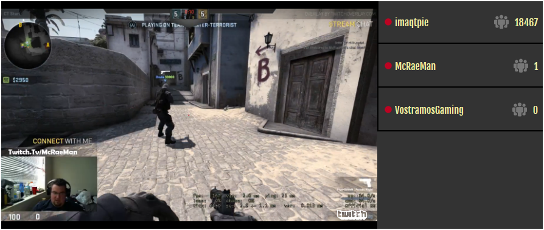

Twitch-Hub is simple Twitch Api scrubber for building elegant twitch viewing platforms.
First we want to make a table in our database with the following scheam
| id | stream_display_name | embed_code | views | pos | time |
|---|
Then we make a Cron-Job to run our scrubbing script every minute storing the info in a MySQL database.
* * * * * cd /var/www/html/exe && ./stream_hub_cron.php >/dev/null 2>/dev/null

Once our cronjob is made we grab all that info from the database and encode it into a json object.

finaly we take elements from that object to and style it any way we like.